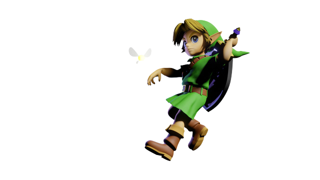

LINK
É o personagem principal do jogo. Ele é um Hylian (humano), que após derrotar Ganondorf os sete sábios selam o vilão no Reino Sagrado, onde ele ficaria por toda a eternidade. Com o mal derrotado, Zelda utiliza a Ocarina e retrocede o tempo em sete anos, enviando Link de volta ao passado para que pudesse recuperar sua infância perdida. 3 meses após os acontecimentos de Ocarina of Time, Link parte em busca da fada Navi, que desapareceu no final de Ocarina of Time. Durante o caminho, é atacado pelo misterioso Skull Kid, que utilizava a Máscara de Majora e era acompanhado por suas fadas, Tael e Taya. Skull Kid rouba a Ocarina do Tempo e a égua de Link, Epona.
Existem várias aparições de Link na história de Hyrule. A existência de vários Link é destacada em várias ocasiões no jogo. Por exemplo, a sequência introdutória de The Legend of Zelda: The Wind Waker (assim como certas passagens dentro de Twilight Princess) refere-se a um herói lendário que é idêntico a Link em aparência e menciona diretamente o "Herói do Tempo" como uma entidade histórica.
